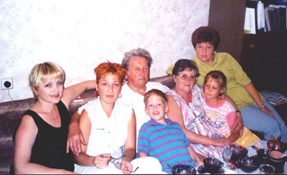

З ІТ життя пов’язувало увесь час, починаючи з вибору професії і до останнього часу. У різних сферах мого професійного життя завжди були присутні ІТ. Без комп’ютера я як без рук.
Трошки про моїх близьких та рідних

Це уся наша родина... практично у повному складі... сестра, її дочка у мами на руках, наш батько з моїм сином, моя дочка та я... так було колись. На жаль, сьогодні мами з татом уже більше немає з нами, діти повиростали, через повномасшабну усі ми розлетілись світом. Та я сподіваюсь, що ми ще зберемося.
Про мої справи
Справи. Куди ж можна подітися від них... Вони всюди... Але, здебільшого, мої справи в останні довоєнні роки були пов'язані з викладацькою діяльністю. Передавала свій накопичений практичний досвід у сфері бухгалтерського обліку молодому поколінню. Намагалася пояснити студентам яка це чудова пісня, якщо мати хоч трохи слуху і, звісно, бажання його розвинути.
І, звичайно, комп'ютер... без нього я як без рук.
Кілька слів про наміри
Ще у ковідні часи вирішила спробувати знову повернутися до ІТ безпосередньо. Дивилася різні варіанти, різні професії сфери ІТ. Пробувала опановувати як самотужки, так і пішла на платний курс. Але навчання не довела до кінця, завадила повномасштабна. Ще у 2021 році натрапила на канал "Фрілансер по життю". З того часу не полишаю його. А побачивши, що з вересня розпочинається курс з верстки сайтів, вирішила довести розпочате до кінця.
Дуже подобається девіз Жеки - Живи, а працюй у вільний час!
Я так хочу! Дуже. І усім бажаю!
Разом із "Фрілансер по життю" усім успіхів та удачі!